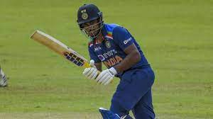

My Hobby

My Hobby is playing Cricket
Cricket is a bat-and-ball game played between two teams of eleven players on a field at the centre of which is a 22-yard pitch with a wicket at each end, each comprising two bails balanced on three stumps.